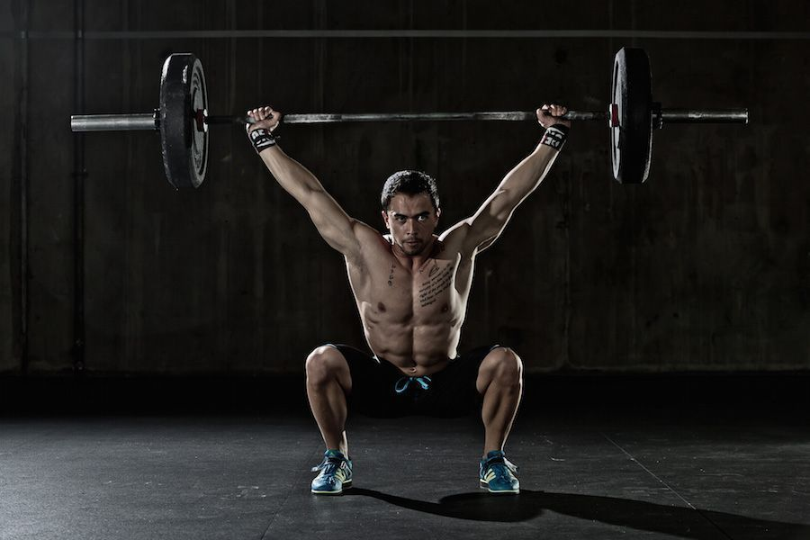
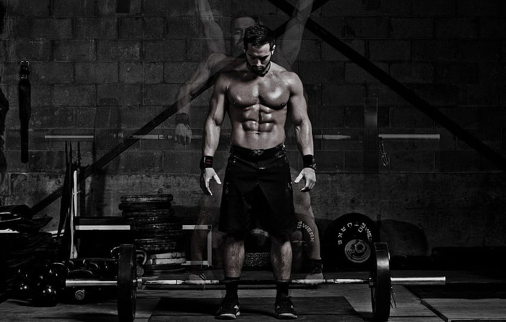
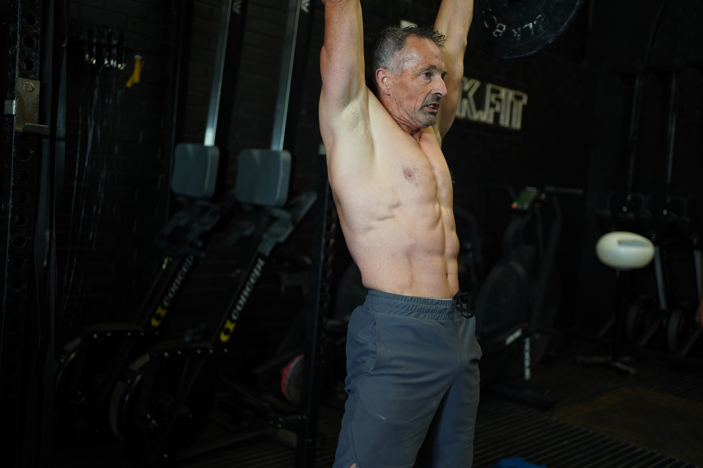

WODLAND
WODLAND es un espacio donde la gente puede focalizarse en la autosuperacion, pasar un buen rato y conocer una comunidad increible
En este Box de Crossfit encontraras todo tipo de equipamiento para que tu entramiento sea un desafio.
El Crossfit es para VOS!
¿A QUIÉN VA DIRIGIDO ESTE TIPO DE ENTRENAMIENTO?
Gracias a su tremenda efectividad como sistema de preparación física, en sus orígenes el CrossFit fue elegido por numerosas academias militares, cuerpos de policía, artistas marciales y cientos de deportistas de élite en todo el mundo como programa de acondicionamiento y entrenamiento de fuerza estándar.
¿POR QUÉ MEJORARÁS RESPECTO DE UN GYM TRADICIONAL?
La mayoría de las personas han pasado alguna vez por un gimnasio convencional, logrando objetivos poco espectaculares en el mejor de los casos, o abandonándolo eventual o indefinidamente por motivos que van desde la falta de motivación a la incapacidad de obtener los resultados deseados.
CROSSFIT COMO COMPLEMENTO PARA TU DEPORTE
Como hemos mencionado, CrossFit trabaja todas las capacidades físicas, por lo que no es extrañar que su práctica mejore notablemente cualquier otra modalidad deportiva. Todos los deportes tienen un factor común, tienen un factor físico. El futbol, sin ir más lejos, cuanto mayor capacidad aeróbica desarrolles, más cómodo llegarás a rematar tras una carrera de 50 metros. Y cuanta más fuerza en las piernas, más potente será dicho remate.
